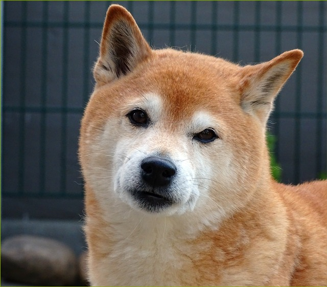
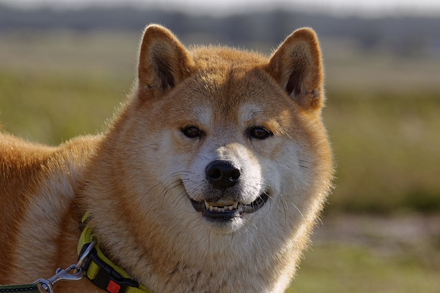
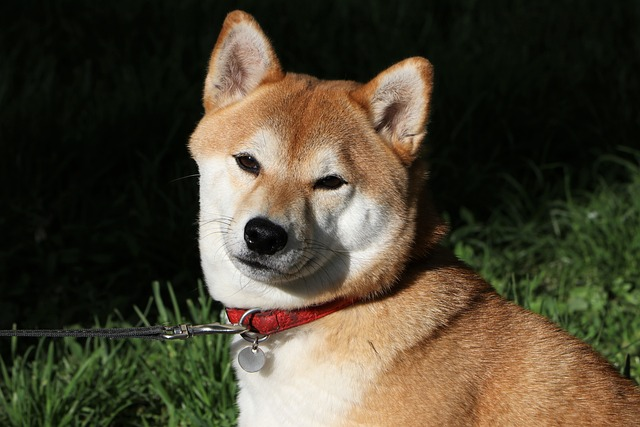
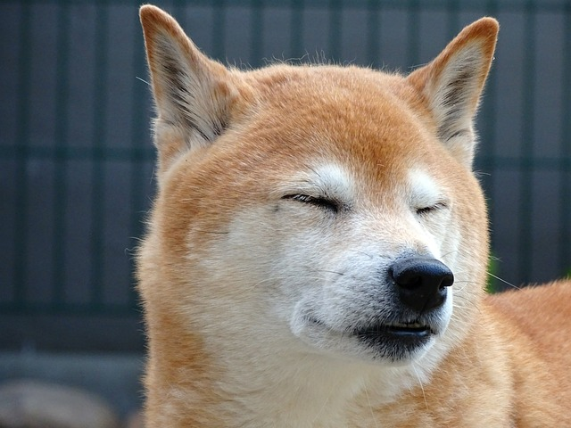

The Shiba Inu is a breed of hunting dog from Japan. A small-to-medium breed, it is the smallest of the six original and distinct spitz breeds of dog native to Japan. Its name literally translates to "brushwood dog", as it is used to flush game.
Some random information

The Shiba's frame is compact with well-developed muscles.

Shibas tend to exhibit an independent nature.

Their average life expectancy is from 12 to 15 years.

Shiba Inus are very clean, so grooming needs will likely be minimal.